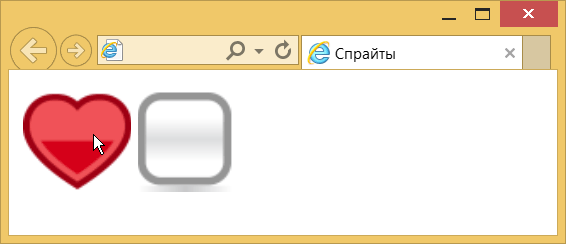

Спрайты
Приём, когда один рисунок меняется на другой при наведении на него курсора мыши, называется эффект перекатывания, или rollover. Смену картинок можно сделать с помощью скриптов или стилей, но нужно помнить о некоторых моментах:
- каждый используемый рисунок создаёт запрос к серверу и, тем самым, незначительно увеличивает время загрузки страницы;
- появление второй картинки происходит с задержкой, потому что сам графический файл ещё не загрузился и на это требуется небольшое время; подобное происходит только в первый раз, затем браузер кэширует картинку и отображает её мгновенно.
Чтобы избавиться от этих недочётов все изображения вставляют в одну общую картинку, которая и называется спрайтом. Вывод самого изображения происходит как фон через свойство background, а смена картинки делается за счёт сдвига фона с помощь background-position. На рис. 1 показан спрайт с несколькими картинками.
Рис. 1. Спрайт
Здесь используется два набора изображений — сердечки и чекбоксы. Располагать близкие картинки можно как горизонтально, так и вертикально, это не является принципиальным. Для каждого набора в коде создаём свой собственный класс и для него указываем размеры элемента, совпадающие с размерами картинки, в данном случае это 64х64 пикселя. Затем добавляем спрайт в виде фона и при необходимости сдвигаем его через background-position (пример 1).
Пример 1. Смена картинки при наведении указателя
<!DOCTYPE html>
<html>
<head>
<meta charset="utf-8">
<title>Спрайты</title>
<style>
.heart, .checkbox {
width: 64px; height: 64px; /* Размеры картинок */
background: url(images/sprite.png) no-repeat; /* Спрайт */
display: inline-block; /* Выстраиваем по горизонтали */
}
.heart:hover {
background-position: 0 -64px ; /* Сдвигаем вверх */
}
.checkbox {
background-position: -64px 0; /* Сдвигаем влево */
}
.checkbox:hover {
background-position: -64px -64px; /* Сдвигаем влево и вверх */
}
</style>
</head>
<body>
<div class="heart"></div>
<div class="checkbox"></div>
</body>
</html>Результат данного примера показан на рис. 2. Куда сдвигать фон — влево или вверх, зависит от исходного расположения картинок.

Рис. 2. Смена картинки при наведении на неё курсора мыши
Сложности у этого метода начинаются, когда в спрайт требуется объединить больше четырёх картинок, да ещё и разного размера. Смена размера, замена существующих картинок и добавление новых в спрайте приводит к повальной смене и кода CSS. Так что лучше пользоваться специальными программами вроде TexturePacker, она сама объединит все рисунки в один и выдаст готовый CSS. К сожалению, эта программа платная, но для ознакомления доступна полнофункциональная пробная версия на 30 дней.
См. также

Все материалы сайта доступны по лицензии Creative Commons «Attribution-NonCommercial» («Атрибуция — Некоммерческое использование») 4.0 Всемирная, если не указано иное.